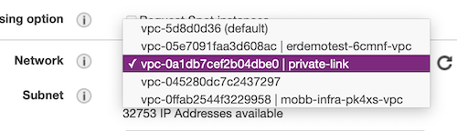

Creating a ROSA cluster with Private Link enabled
Prerequisites
Create VPC and Subnets
The following instructions use the AWS CLI to create the necessary networking to deploy a Private Link ROSA cluster into a Single AZ and are intended to be a guide. Ideally you would use an Automation tool like Ansible or Terraform to manage your VPCs.
When creating subnets, make sure that subnet(s) are created to availability zone that has ROSA instances types available. If AZ is not "forced", subnet is created to random AZ in the region. Force AZ using
--availability-zoneargument increate-subnetcommand. Userosa list instance-typesto list ROSA instance types and check available types availability in AZ withaws ec2 describe-instance-type-offerings --location-type availability-zone --filters Name=location,Values=AZ_NAME_HERE --region REGION_HERE --output text | egrep "YOU_PREFERRED_INSTANCE_TYPE". As an example, you cannot install ROSA tous-east-1eAZ, butus-east-1bworks fine.
Option 1 - VPC with a private subnet and AWS Site-to-Site VPN access.
Todo
Option 2 - VPC with public and private subnets and AWS Site-to-Site VPN access
Todo
Option 3 - VPC with public and private subnets (NAT)
This will create both a Private and Public subnet. All cluster resources will live in the private subnet, the public subnet only exists to NAT the egress traffic to the Internet.

As an alternative use the Terraform instructions provided here then skip down to the rosa create command.
-
Set a Cluster name
ROSA_CLUSTER_NAME=private-link -
Create a VPC to install a ROSA cluster into
`` VPC_ID=aws ec2 create-vpc --cidr-block 10.0.0.0/16 | jq -r .Vpc.VpcId`aws ec2 create-tags --resources $VPC_ID \ --tags Key=Name,Value=$ROSA_CLUSTER_NAME | jq .
aws ec2 modify-vpc-attribute --vpc-id $VPC_ID --enable-dns-hostnames | jq . ```
-
Create a Public Subnet for the cluster to NAT egress traffic out of
``bash PUBLIC_SUBNET=aws ec2 create-subnet --vpc-id $VPC_ID --cidr-block 10.0.128.0/17 | jq -r .Subnet.SubnetId`aws ec2 create-tags --resources $PUBLIC_SUBNET \ --tags Key=Name,Value=$ROSA_CLUSTER_NAME-public | jq . ```
-
Create a Private Subnet for the cluster machines to live in
``bash PRIVATE_SUBNET=aws ec2 create-subnet --vpc-id $VPC_ID --cidr-block 10.0.0.0/17 | jq -r .Subnet.SubnetId`aws ec2 create-tags --resources $PRIVATE_SUBNET \ --tags Key=Name,Value=$ROSA_CLUSTER_NAME-private | jq . ```
-
Create an Internet Gateway for NAT egress traffic
``bash I_GW=aws ec2 create-internet-gateway | jq -r .InternetGateway.InternetGatewayId` aws ec2 attach-internet-gateway --vpc-id $VPC_ID --internet-gateway-id $I_GW | jq .aws ec2 create-tags --resources $I_GW \ --tags Key=Name,Value=$ROSA_CLUSTER_NAME | jq . ```
-
Create a Route Table for NAT egress traffic
``bash R_TABLE=aws ec2 create-route-table --vpc-id $VPC_ID | jq -r .RouteTable.RouteTableId`aws ec2 create-route --route-table-id $R_TABLE --destination-cidr-block 0.0.0.0/0 --gateway-id $I_GW | jq .
aws ec2 describe-route-tables --route-table-id $R_TABLE | jq .
aws ec2 associate-route-table --subnet-id $PUBLIC_SUBNET --route-table-id $R_TABLE | jq .
aws ec2 create-tags --resources $R_TABLE \ --tags Key=Name,Value=$ROSA_CLUSTER_NAME | jq . ```
-
Create a NAT Gateway for the Private network
``bash EIP=aws ec2 allocate-address --domain vpc | jq -r .AllocationIdNAT_GW=aws ec2 create-nat-gateway --subnet-id $PUBLIC_SUBNET \ --allocation-id $EIP | jq -r .NatGateway.NatGatewayId`aws ec2 create-tags --resources $EIP --resources $NAT_GW \ --tags Key=Name,Value=$ROSA_CLUSTER_NAME | jq . ```
-
Create a Route Table for the Private subnet to the NAT
``bash R_TABLE_NAT=aws ec2 create-route-table --vpc-id $VPC_ID | jq -r .RouteTable.RouteTableId`while ! aws ec2 describe-route-tables --route-table-id $R_TABLE_NAT \ | jq .; do sleep 1; done
aws ec2 create-route --route-table-id $R_TABLE_NAT --destination-cidr-block 0.0.0.0/0 --gateway-id $NAT_GW | jq .
aws ec2 associate-route-table --subnet-id $PRIVATE_SUBNET --route-table-id $R_TABLE_NAT | jq .
aws ec2 create-tags --resources $R_TABLE_NAT $EIP \ --tags Key=Name,Value=$ROSA_CLUSTER_NAME-private | jq . ```
Deploy ROSA
-
Create ROSA cluster in the private subnet
bash rosa create cluster --private-link \ --cluster-name=$ROSA_CLUSTER_NAME \ --machine-cidr=10.0.0.0/16 \ --subnet-ids=$PRIVATE_SUBNET
Test Connectivity
-
Create an Instance to use as a jump host
TODO: CLI instructions
Through the GUI:
-
Navigate to the EC2 console and launch a new instance
-
Select the AMI for your instance, if you don't have a standard, the Amazon Linux 2 AMI works just fine
-
Choose your instance type, the t2.micro/free tier is sufficient for our needs, and click Next: Configure Instance Details
-
Change the Network settings to setup this host inside your private-link VPC 
-
Change the Subnet setting to use the private-link-public subnet

-
Change Auto-assign Public IP to Enable

-
Default settings for Storage and Tags are OK, if you do not need to change them for your own reasons, select 6. Configure Security Group from the top navigation or click through using the Next buttons
-
If you already have a security group created to allow access from your computer to AWS, choose Select an existing security group and choose that group from the list and skip to Review and Launch. Otherwise, select Create a new security group and continue.
-
To allow access only from your current public IP, change the Source heading to use My IP

-
Click Review and Launch, verify all settings are correct and follow the standard AWS instructions for finalizing the setup and selecting/creating the security keys.
-
Once launched, open the instance summary for the jump host instance and note the public IP address.
-
-
Create a ROSA admin user and save the login command for use later
rosa create admin -c $ROSA_CLUSTER_NAME -
Note the DNS name of your private cluster, use the
rosa describecommand if needed
rosa describe cluster -c private-link
-
update /etc/hosts to point the openshift domains to localhost. Use the DNS of your openshift cluster as described in the previous step in place of
$YOUR_OPENSHIFT_DNSbelow127.0.0.1 api.$YOUR_OPENSHIFT_DNS 127.0.0.1 console-openshift-console.apps.$YOUR_OPENSHIFT_DNS 127.0.0.1 oauth-openshift.apps.$YOUR_OPENSHIFT_DNS -
SSH to that instance, tunneling traffic for the appropriate hostnames. Be sure to use your new/existing private key, the OpenShift DNS for
$YOUR_OPENSHIFT_DNSand your jump host IP for$YOUR_EC2_IPbash sudo ssh -i PATH/TO/YOUR_KEY.pem \ -L 6443:api.$YOUR_OPENSHIFT_DNS:6443 \ -L 443:console-openshift-console.apps.$YOUR_OPENSHIFT_DNS:443 \ -L 80:console-openshift-console.apps.$YOUR_OPENSHIFT_DNS:80 \ ec2-user@$YOUR_EC2_IP -
Log into the cluster using oc login command from the create admin command above. ex.
bash oc login https://api.private-test.3d1n.p1.openshiftapps.com:6443 --username cluster-admin --password GQSGJ-daqfN-8QNY3-tS9gU -
Check that you can access the Console by opening the console url in your browser.
Cleanup
-
Delete ROSA
bash rosa delete cluster -c $ROSA_CLUSTER_NAME -y -
Delete AWS resources
bash aws ec2 delete-nat-gateway --nat-gateway-id $NAT_GW | jq . aws ec2 release-address --allocation-id=$EIP | jq . aws ec2 detach-internet-gateway --vpc-id $VPC_ID \ --internet-gateway-id $I_GW | jq . aws ec2 delete-subnet --subnet-id=$PRIVATE_SUBNET | jq . aws ec2 delete-subnet --subnet-id=$PUBLIC_SUBNET | jq . aws ec2 delete-route-table --route-table-id=$R_TABLE | jq . aws ec2 delete-route-table --route-table-id=$R_TABLE_NAT | jq . aws ec2 delete-vpc --vpc-id=$VPC_ID | jq .